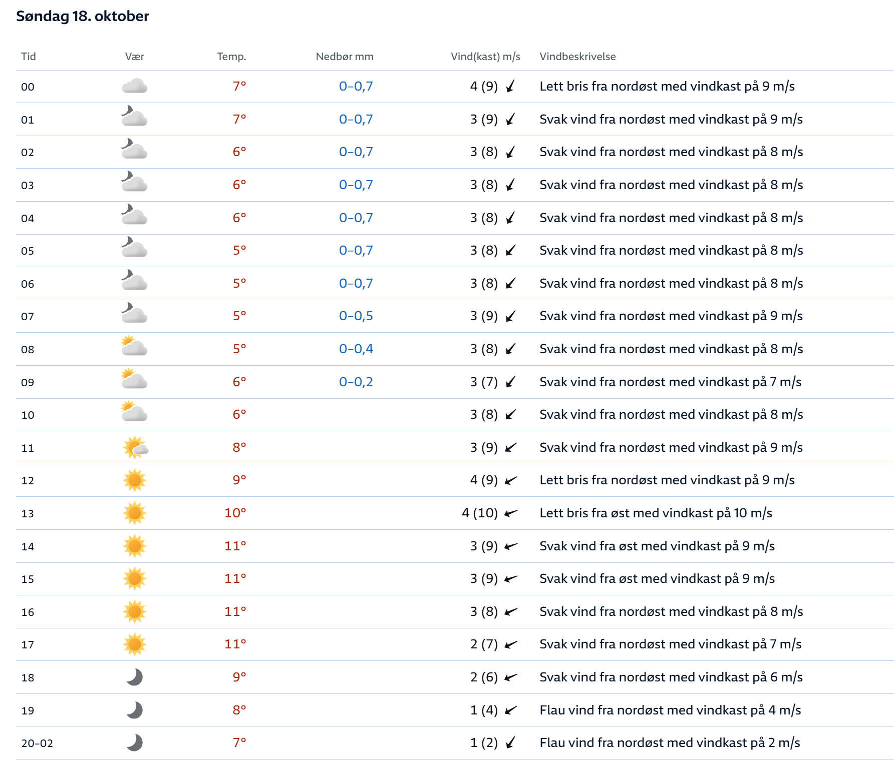

A Sunday in
the autumn forest.
A loop through Söderåsen, timed for a brighter finish.
Across the Øresund in the morning. Back home in the afternoon.
Let the morning clouds lift. Save the final stretch for the best weather.
Your route, hour by hour.
Follow the GPX in its original direction.
Weather at your estimated arrival
Move along the route to see the forecast when you get there.
A day worth getting up for.
Sunday 18 October 2026 · Denmark & Sweden, CEST
The sky along the trail.
Hourly outlook at your selected point. Green cards mark the final-third time window.
| Route checkpoint | Distance | Arrival | Conditions | Temp | Rain | Wind / gust |
|---|
How the plan works · sources & attached forecast
The route follows all 2,994 points in your original GPX. Distances use the haversine formula; uphill effort uses the cumulative positive elevation differences supplied in the GPX. These elevations may contain noise. Position and timing are estimates, not live tracking or navigation.
Open-Meteo is queried at five distance-based samples along the loop (start, 25%, 50%, 75%, finish). Each trail point uses the nearest sample by route distance and its estimated arrival hour. Several samples may share a weather-model grid cell; the forecast cannot resolve individual ravines, forest shelter or every viewpoint. No precision beyond hourly weather is implied.
The optimizer compares 15-minute starts and scores eleven checkpoints in the final distance third. Lower cloud cover, rain amount / likelihood and strong gusts score better. It chooses the earliest start within one point of the best score, while meeting your departure / return limits and finishing at least 30 min before sunset. It uses the currently selected source. Weather refreshes update the display; press the optimizer again to change your start time.
A successful refresh is labeled “Live forecast”; the retrieval timestamp is shown, not a model issue time. Refresh runs on opening and every 30 min while the page is open. The last valid forecast is cached locally. A saved forecast remains labeled as a snapshot; the attached image is a separate fallback. Forecasts are predictions, not observations.
The image says Sunday 18 October but does not show its location, year, provider or issue time. It is treated as the user-supplied forecast for this trip. Blank rain entries are shown as “— / not specified”, never silently converted to measured zero. Cloud icons supply a qualitative cloudiness score only; rain probabilities and feels-like temperatures are unavailable. The 20:00–02:00 image row is used only for 20:00–23:00 on the trip date.
Sunrise / sunset come from the saved Open-Meteo response (07:44 / 17:59 CEST), or a refreshed response when available. Both countries use the same local time on the trip date. Clear skies do not guarantee direct sun in shaded ravines. Driving and parking can take longer than planned; check the operator links on departure day.
Your original forecast image
